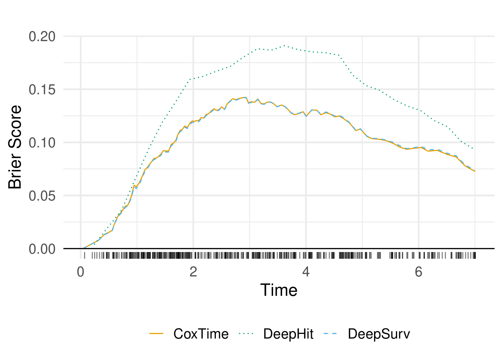

Simulation of Time-independent Effects
Sim_time_independent.RmdIn this vignette we simulate survival data to detect time-independent feature effects using gradient-based explanation techniques for survival neural network models.
Load the necessary libraries and source the utility functions.
library(Survinng)
library(ggplot2)
library(cowplot)
library(dplyr)
library(tidyr)
library(survival)
library(survminer)
library(torch)
library(viridis)
library(here)Generate the data
We consider a simulated dataset with the following characteristics:
-
Sample size: 10,000 individuals
- 9,500 samples used for training
- 500 samples used for testing
- 9,500 samples used for training
-
Covariates:
: has a positive effect on the hazard
→ Negative effect on survival: has a strong negative effect on the hazard
→ Positive effect on survival: has no effect on the hazard or survival
- Time-dependency: None of the covariates have time-varying effects
Load Models and Data
The models used in this vignette are the same as those used in the
main paper. The models were trained using the
survivalmodels package, and the training process is not
shown here, but can be found in the
vignettes/articles/Sim_time_independent directory.
# Load data
train <- readRDS(here("vignettes/articles/Sim_time_independent/train.rds"))
test <- readRDS(here("vignettes/articles/Sim_time_independent/test.rds"))
dat <- rbind(train, test)
# Load extracted models
ext_coxtime <- readRDS(here("vignettes/articles/Sim_time_independent/ext_coxtime.rds"))
ext_deepsurv <- readRDS(here("vignettes/articles/Sim_time_independent/ext_deepsurv.rds"))
ext_deephit <- readRDS(here("vignettes/articles/Sim_time_independent/ext_deephit.rds"))Create Explainer
The explain() function creates an explainer object for
the survival models. The data argument specifies the
dataset used for explanation, and the model argument
specifies the model to be explained. The target argument
indicates the type of prediction to be explained (e.g., “survival”,
“risk”, “cumulative hazard”).
Performance
The performance of the models is evaluated using the C-Index and Integrated Brier Score (IBS). The C-Index measures the concordance between predicted and observed survival times, while the IBS quantifies the accuracy of survival predictions.
| Model | C-Index | IBS |
|---|---|---|
| CoxTime | 0.809372 | 0.099053 |
| DeepSurv | 0.809121 | 0.099031 |
| DeepHit | 0.808829 | 0.141614 |

Survival Prediction
The survival predictions for the test dataset are computed using the
predict() function. The type argument
specifies the type of prediction to be made (e.g., “survival”, “risk”,
“cumulative hazard”). The survival predictions are then plotted for a
set of instances of interest.
# Print instances of interest
tid_ids <- c(13, 387)
print(test[tid_ids, ])
#> time status x1 x2 x3
#> 343 2.6653596 1 -0.434617 0.1162303 -0.08053765
#> 7906 0.9577924 1 2.454611 0.2462072 -0.04249294
# Compute Vanilla Gradient
grad_cox <- surv_grad(exp_coxtime, target = "survival", instance = tid_ids)
grad_deephit <- surv_grad(exp_deephit, target = "survival", instance = tid_ids)
grad_deepsurv <- surv_grad(exp_deepsurv, target = "survival", instance = tid_ids)
# Plot survival predictions
surv_plot <- cowplot::plot_grid(
plot_surv_pred(grad_cox) ,
plot_surv_pred(grad_deephit),
plot_surv_pred(grad_deepsurv),
nrow = 1, labels = c("CoxTime", "DeepHit", "DeepSurv"),
label_x = 0.03,
label_size = 14)
surv_plot
Explainable AI
The following sections demonstrate the application of various gradient-based explanation methods to the survival models. The methods include Grad(t), SmoothGrad(t), G x I(t), SmoothGrad x I(t), IntGrad(t), and GradSHAP(t). Each method provides insights into the contributions of the covariates to the survival predictions.
Grad(t) (Sensitivity)
Here we compute the gradient of the survival predictions with respect
to the input features. The surv_grad() function computes
the gradients for the specified instances.
# Plot attributions
grad_plot <- cowplot::plot_grid(
plot_attribution(grad_cox, label = "Grad(t)") ,
plot_attribution(grad_deephit, label = "Grad(t)"),
plot_attribution(grad_deepsurv, label = "Grad(t)"),
nrow = 3, labels = c("CoxTime", "DeepHit", "DeepSurv"))
grad_plot
SmoothGrad(t) (Sensitivity)
SmoothGrad(t) is a method that adds noise to the input features and computes the average gradient over multiple noisy samples. This approach helps to reduce the noise in the gradient estimates and provides a clearer picture of the feature importance.
# Compute SmoothGrad
sg_cox <- surv_smoothgrad(exp_coxtime, target = "survival", instance = tid_ids, n = 50, noise_level = 0.1)
sg_deephit <- surv_smoothgrad(exp_deephit, target = "survival", instance = tid_ids, n = 50, noise_level = 0.1)
sg_deepsurv <- surv_smoothgrad(exp_deepsurv, target = "survival", instance = tid_ids, n = 50, noise_level = 0.1)
# Plot attributions
smoothgrad_plot <- cowplot::plot_grid(
plot_attribution(sg_cox, label = "SG(t)"),
plot_attribution(sg_deephit, label = "SG(t)"),
plot_attribution(sg_deepsurv, label = "SG(t)"),
nrow = 3, labels = c("CoxTime", "DeepHit", "DeepSurv"))
smoothgrad_plot
Grad x I(t)
Grad x I(t) is a method that computes the gradient of the survival predictions with respect to the input features and multiplies it by the survival predictions themselves. This approach provides insights into the true local effects of the covariates on the survival prediction.
# Compute GradientxInput
gradin_cox <- surv_grad(exp_coxtime, instance = tid_ids, times_input = TRUE)
gradin_deephit <- surv_grad(exp_deephit, instance = tid_ids, times_input = TRUE)
gradin_deepsurv <- surv_grad(exp_deepsurv, instance = tid_ids, times_input = TRUE)
# Plot attributions
gradin_plot <- cowplot::plot_grid(
plot_attribution(gradin_cox, label = "GxI(t)"),
plot_attribution(gradin_deephit, label = "GxI(t)"),
plot_attribution(gradin_deepsurv, label = "GxI(t)"),
nrow = 3, labels = c("CoxTime", "DeepHit", "DeepSurv"))
gradin_plot
# Plot attributions
grad_gradin_plot <- cowplot::plot_grid(
plot_attribution(grad_deepsurv, label = "Grad(t)") ,
plot_attribution(gradin_deepsurv, label = "GxI(t)"),
nrow = 2, labels = c("DeepSurv", "DeepSurv"))
grad_gradin_plot
SmoothGrad x I(t)
SmoothGrad x I(t) is a method that adds noise to the input features and computes the average gradient over multiple noisy samples, multiplied by the survival predictions. This approach helps to reduce the noise in the gradient estimates and provides a clearer picture of the feature importance.
# Compute SmoothGradxInput
sgin_cox <- surv_smoothgrad(exp_coxtime, instance = tid_ids, n = 50, noise_level = 0.3,
times_input = TRUE)
sgin_deephit <- surv_smoothgrad(exp_deephit, instance = tid_ids, n = 50, noise_level = 0.3,
times_input = TRUE)
sgin_deepsurv <- surv_smoothgrad(exp_deepsurv, instance = tid_ids, n = 50, noise_level = 0.3,
times_input = TRUE)
# Plot attributions
smoothgradin_plot <- cowplot::plot_grid(
plot_attribution(sgin_cox, label = "SGxI(t)"),
plot_attribution(sgin_deephit, label = "SGxI(t)"),
plot_attribution(sgin_deepsurv, label = "SGxI(t)"),
nrow = 3, labels = c("CoxTime", "DeepHit", "DeepSurv"))
smoothgradin_plot
Zero baseline (should be proportional to Gradient x I(t))
The zero baseline is a reference point where all features are set to zero.
# Compute IntegratedGradient with 0 baseline
x_ref <- matrix(c(0,0,0), nrow = 1)
ig0_cox <- surv_intgrad(exp_coxtime, instance = tid_ids, n = 50, x_ref = x_ref)
ig0_deephit <- surv_intgrad(exp_deephit, instance = tid_ids, n = 50, x_ref = x_ref)
ig0_deepsurv <- surv_intgrad(exp_deepsurv, instance = tid_ids, n = 50, x_ref = x_ref)
# Plot attributions
intgrad0_plot <- cowplot::plot_grid(
plot_attribution(ig0_cox, label = "IntGrad(t)"),
plot_attribution(ig0_deephit, label = "IntGrad(t)"),
plot_attribution(ig0_deepsurv, label = "IntGrad(t)"),
nrow = 3, labels = c("CoxTime", "DeepHit", "DeepSurv"))
intgrad0_plot
# Plot attributions
intgrad0_plot_comp <- cowplot::plot_grid(
plot_attribution(ig0_cox, add_comp = TRUE, label = "IntGrad(t)"),
plot_attribution(ig0_deephit, add_comp = TRUE, label = "IntGrad(t)"),
plot_attribution(ig0_deepsurv, add_comp = TRUE, label = "IntGrad(t)"),
nrow = 3, labels = c("CoxTime", "DeepHit", "DeepSurv"))
intgrad0_plot_comp
effectively visualize the normalized absolute contribution of each feature to the difference between reference and (survival) prediction over time.
# Plot contributions
intgrad0_plot_contr <- cowplot::plot_grid(
plot_contribution(ig0_cox, label = "IntGrad(t)"),
plot_contribution(ig0_deephit, label = "IntGrad(t)"),
plot_contribution(ig0_deepsurv, label = "IntGrad(t)"),
nrow = 3, labels = c("CoxTime", "DeepHit", "DeepSurv"))
intgrad0_plot_contr
Complementarily, emphasize the relative contribution and direction of each feature at a set of representative survival times.
# Plot force
intgrad0_plot_force <- cowplot::plot_grid(
plot_force(ig0_cox, upper_distance = 0.04, lower_distance = 0.04, label = "IntGrad(t)"),
plot_force(ig0_deephit, upper_distance = 0.02, lower_distance = 0, label = "IntGrad(t)"),
plot_force(ig0_deepsurv, upper_distance = 0.04, lower_distance = 0.04, label = "IntGrad(t)"),
nrow = 3, labels = c("CoxTime", "DeepHit", "DeepSurv"))
intgrad0_plot_force
GradShap
GradSHAP(t) is a method that computes the SHAP values for survival predictions. It provides a measure of the contribution of each feature to the survival predictions, taking into account the time-dependent effects.
# Compute GradShap
gshap_cox <- surv_gradSHAP(exp_coxtime, instance = tid_ids, n = 50, num_samples = 100)
gshap_deephit <- surv_gradSHAP(exp_deephit, instance = tid_ids, n = 50, num_samples = 100)
gshap_deepsurv <- surv_gradSHAP(exp_deepsurv, instance = tid_ids, n = 50, num_samples = 100)
# Plot attributions
gshap_plot <- cowplot::plot_grid(
plot_attribution(gshap_cox, label = "GradSHAP(t)"),
plot_attribution(gshap_deephit, label = "GradSHAP(t)"),
plot_attribution(gshap_deepsurv, label = "GradSHAP(t)"),
nrow = 3, labels = c("CoxTime", "DeepHit", "DeepSurv"))
gshap_plot
# Plot attributions
gshap_plot_comp <- cowplot::plot_grid(
plot_attribution(gshap_cox, add_comp = TRUE, label = "GradSHAP(t)"),
plot_attribution(gshap_deephit, add_comp = TRUE, label = "GradSHAP(t)"),
plot_attribution(gshap_deepsurv, add_comp = TRUE, label = "GradSHAP(t)"),
nrow = 3, labels = c("CoxTime", "DeepHit", "DeepSurv"))
gshap_plot_comp
# Plot contributions %
gshap_plot_contr <- cowplot::plot_grid(
plot_contribution(gshap_cox, label = "GradSHAP(t)"),
plot_contribution(gshap_deephit, label = "GradSHAP(t)"),
plot_contribution(gshap_deepsurv, label = "GradSHAP(t)"),
nrow = 3, labels = c("CoxTime", "DeepHit", "DeepSurv"))
gshap_plot_contr
# Plot force
gshap_plot_force <- cowplot::plot_grid(
plot_force(gshap_cox, upper_distance = 0, lower_distance = 0, lower_distance_x1 = 0.05, label = "GradSHAP(t)"),
plot_force(gshap_deephit, upper_distance = 0, lower_distance = 0, lower_distance_x1 = 0.02, label = "GradSHAP(t)"),
plot_force(gshap_deepsurv, upper_distance = 0, lower_distance = 0, lower_distance_x1 = 0.04, label = "GradSHAP(t)"),
nrow = 3, labels = c("CoxTime", "DeepHit", "DeepSurv"))
gshap_plot_force